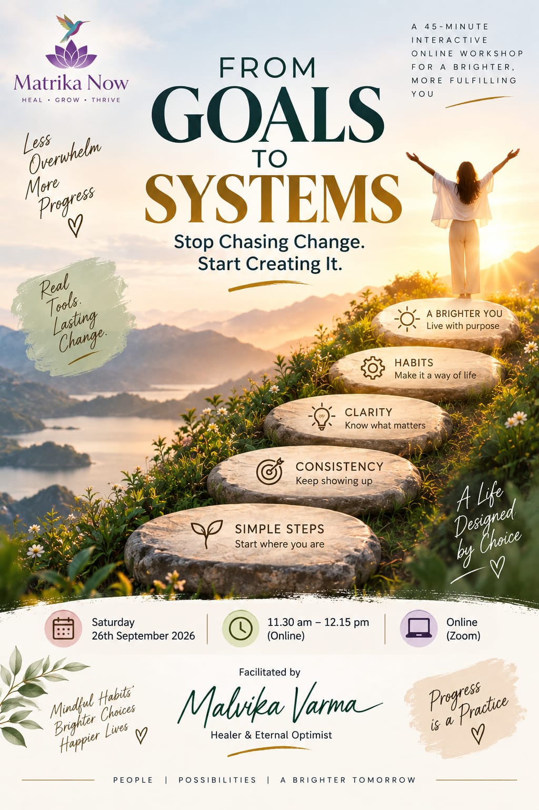

and how you are meant to move through life
A living space of awareness, healing, and self-discovery — where healing, consciousness, and leadership are not separate paths, but expressions of the same inner intelligence, unfolding now.
Stop Chasing Change. Start Creating It.

Not loudly. Not all at once. Just a quiet sense that the way you are living and the way you are made have drifted apart.
None of this means something is wrong with you. More often, it means something in you is ready to be understood.
See what your archetype reveals ↓Healing begins when we pause, listen, and connect with our inner truth. At Matrika Now, we believe in a compassionate path that honours the whole of who you are.
The present is where healing unfolds. Not in the past we carry or the future we fear — but here, in this breath, this moment.
Integrating time-honoured traditions with contemporary methods — drawing from Ayurveda, the Yogasutras, and archetypal wisdom to illuminate your path.
A collective space led by skilled healers dedicated to your growth and well-being. You are not alone in this journey of becoming.
Whether you are seeking to heal, learn, or connect, we offer pathways to explore the depths of your inner self with compassion, curiosity, and care.
This work changed how I understand myself. Malvika holds a mirror without judgment — and what you see in it is actually freeing.
Malvika holds space unlike anyone I have ever encountered. The archetype work unlocked something I had been circling for years.
The dosha discovery was a revelation. Understanding my constitution explained so many patterns in my relationships and responses.
When you understand your inner design,
life stops feeling random.
Most of us spend years trying to become someone else — calmer, stronger, more disciplined, more like the people around us. The work here is quieter, and far more freeing. It begins by seeing what is already true about you:
This is not about fixing yourself. It is about remembering your original rhythm.
Your archetype is not your role. It is the lens through which you experience the world — shaping how you lead, relate, and respond under stress. At Matrika Now, archetypes are used as mirrors, not boxes.
The one who creates safety, connection, and emotional continuity. You sense what is needed — often before it is spoken.
Care · Holding · Emotional Attunement
In shadowGiving until there is nothing left for yourself.
Who holds you?
The one who initiates movement and change. Where things stagnate, you bring heat, clarity, and direction.
Transformation · Action · Momentum
In shadowPushing change before others — or you — are ready.
What might need to wait for its right time?
The one who searches for meaning beneath the surface. Questions matter more to you than quick answers. You are not lost — you are listening.
Meaning · Inquiry · Inner Truth
In shadowSearching for so long that you forget to arrive.
What do you already know?
The one who creates structure, continuity, and long-term stability. Others rely on you because you don't disappear when things get difficult.
Stability · Structure · Continuity
In shadowHolding everything together, and never setting it down.
What would you let fall, if it were safe to?
The one who senses possibility and future pathways. Ideas and new directions arrive naturally to you. You are here to expand what others believe is possible.
Imagination · Possibility · Future-Sensing
In shadowLiving in the future and missing the ground beneath your feet.
What wants to begin today, not someday?
The one who brings grounding, presence, and nervous-system safety. People feel calmer simply by being near you.
Grounding · Presence · Nervous-System Safety
In shadowStaying still when life is asking you to move.
Where are you waiting to be moved?
The one who integrates, transforms, and synthesizes experience. You are comfortable in complexity and shadow. You don't just change — you transmute.
Integration · Synthesis · Deep Transformation
In shadowCarrying other people's darkness as if it were yours to transform.
What is yours to transmute — and what is not?
"This space won't flatter you — it will understand you."
From the ancient science of Ayurveda comes the understanding that each of us is born with a unique energetic constitution. The three doshas govern how your body functions, how your mind processes experience, and how you respond to the world.
Vata governs motion, breath, and the nervous system. When in balance, it brings creativity, enthusiasm, and inspiration. When out of balance, anxiety and scattered energy arise.
Light · Quick · Imaginative · Sensitive
You may recognise yourself ifyour mind races ahead of your body, ideas arrive faster than you can finish them, and routine feels like a cage — until you finally have one.
A small ritualWarm, grounding meals and going to bed at the same time each night.
Pitta governs digestion, metabolism, and transformation. When in balance, it brings sharp intellect, courage, and decisive leadership. When out of balance, intensity and burnout emerge.
Focused · Driven · Sharp · Decisive
You may recognise yourself ifyou are the one who gets things done — and the one who finds it hardest to stop.
A small ritualA pause before you respond. Cool water, an evening walk, and permission to be less than perfect.
Kapha governs structure, growth, and immunity. When in balance, it brings steadiness, compassion, and deep nourishment. When out of balance, heaviness and resistance to change set in.
Grounded · Steady · Compassionate · Resilient
You may recognise yourself ifyou are the steady presence everyone relies on, but beginning something new can feel like moving a mountain.
A small ritualMove early in the day, and say yes to one small new thing each week.
Most of us carry all three, in our own unique proportion. Knowing yours is the beginning of living with your nature, rather than against it.
For moments that require depth, discretion, and clarity.
These sessions are designed for individuals navigating inner transitions that don't yet have language.
→ For those who value nuance, confidentiality, and real movement.
Because coherence deepens in the presence of others.
Group work at Matrika Now is carefully held. You are not processed. You are not exposed. You are met.
→ For those who value shared depth without loss of individuality.
Clarity you can return to. Practices you can live.
Thoughtfully structured learning spaces that blend conceptual understanding, reflective inquiry, and embodied practice.
→ For those who want structure, self-paced depth, and lasting reference points.
As a compassionate guide and healer, I am here to walk beside you on your journey toward self-discovery and wholeness. My practice is rooted in the belief that healing begins with acceptance and kindness — embracing every aspect of our being, including the wounds we carry.
Through inner exploration, intuitive insights, and a nurturing presence, I support you in finding clarity and connection with your authentic self. Whether you are seeking to heal, learn, or simply find your way back to yourself — this space is for you.
The time to heal is now. Life can often feel overwhelming — whether it's emotional wounds, unprocessed grief, stress, or a sense of being stuck in patterns that no longer serve you. Matrika Now is here to help you navigate these challenges with compassion and care.
If you are searching for:
Then Matrika Now is the space for you. Together, we will embrace your journey, honouring every step with a compassionate presence and understanding. Take that first step today — toward healing, empowerment, and the life you deserve.
If you are wondering whether this is for you, you are in good company.
Not at all. You bring your life, your questions and your curiosity. The language and the frameworks are introduced gently, only as far as they are useful to you.
That is often the most honest place to begin. Many people arrive with a feeling rather than a goal — a restlessness, a heaviness, a sense of being out of step. Naming it is part of the work.
1:1 work suits moments that need depth and privacy. Group spaces suit those who grow through shared experience. Courses suit those who want structure they can return to at their own pace. If you are unsure, begin with a conversation.
No. This work complements professional medical and psychological care; it does not replace it. If you are in crisis or managing a health condition, please continue to work with your doctor or therapist.